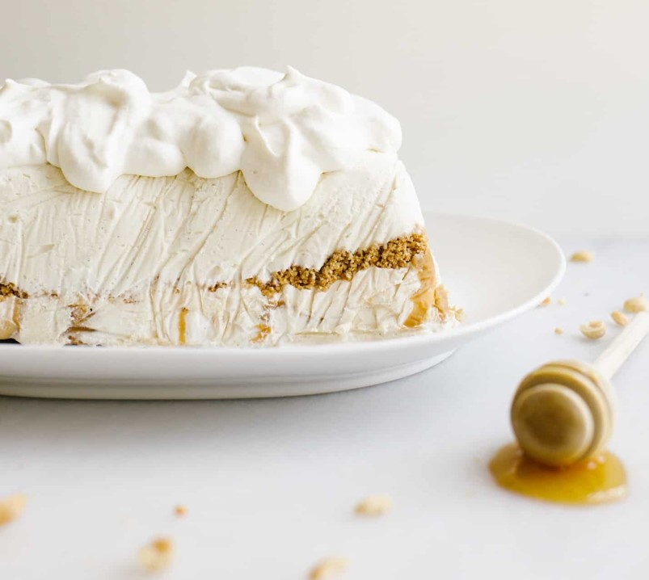

Peanut Butter Honey Ice Cream Cake
This peanut butter honey graham ice cream cake has two flavors of no-churn ice cream and a salty graham cracker crumble throughout!

Author: Kate Wood
Prep Time: 15 min
Total Time: 360 min
Servings: 10
Category: Dessert
Ingredients
For the graham crumble:
- 2/3 cup (60 gm) graham cracker crumbs
- 2–1/2 tablespoons unsalted butter, melted
- 1/4 teaspoon cinnamon
- 1/8–1/4 teaspoon salt (more or less depending on your preferences)
For the ice cream:
- 1 (14 oz) can sweetened condensed milk, divided
- 2 cups (480 gm) heavy whipping cream, divided
- 2 tablespoons honey
- ½ teaspoon vanilla extract
- 1/3 cup peanut butter
For the frosting, if desired:
- 1 cup (240 gm) heavy whipping cream
- 3 tablespoons honey
- 1 teaspoon vanilla extract
Instructions
To prepare the graham crumble:
- Combine all of the ingredients in a bowl, stirring until it forms a sandy mixture. Use an 1/8 teaspoon salt at first and add a little extra if desired. Set aside.
To prepare the ice creams:
- Line a large loaf pan with plastic wrap that extends up all four sides with a few inches of extra hangover. You’ll form your ice cream cake in the pan so you want to make sure that no ice cream actually touches the pan or it could stick! Set aside.
- Pour 7 ounces (half the can) of sweetened condensed milk and 1 cup of heavy whipping cream in a large bowl. Use a hand mixer to beat the mixture until it thickens to a soupy fluff consistency. Add the honey and vanilla extract and continue to whip until stiff peaks form. Dollop and spread this ice cream into the bottom of the prepared pan. Crumble the graham crumble on top of the honey ice cream until it is adequately covered. You may have a little leftover.
- To prepare the peanut butter ice cream stir the remaining sweetened condensed milk with the peanut butter. In a large bowl, whip the remaining cream until stiff peaks form. Fold the peanut butter/ condensed milk into the whipped cream. I like to leave the mixture a little streaky so there appears to be ribbons of peanut butter throughout, but you can fold it all the way together if desired. Pour the ice cream on top of the graham crumble in the pan and then spread to smooth. Freeze completely, at least six hours or overnight.
To prepare the frosting (if desired):
- Whip the cream to soft peaks and then add in the honey. Continue whipping to medium-hard peaks. Remove the cake from the pan and peel off the plastic. You may need to let it set out for a moment to release from the pan. Spread the honey whipped cream all over the cake and then freeze until about 15 minutes prior to serving. Enjoy!
